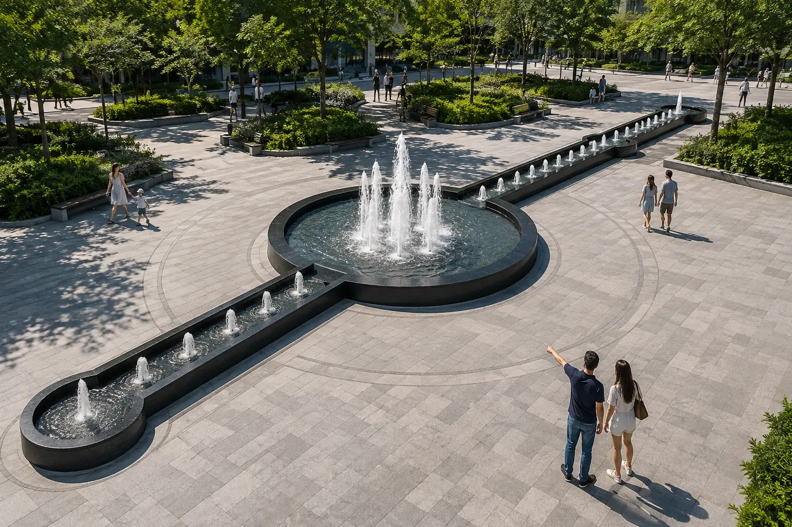
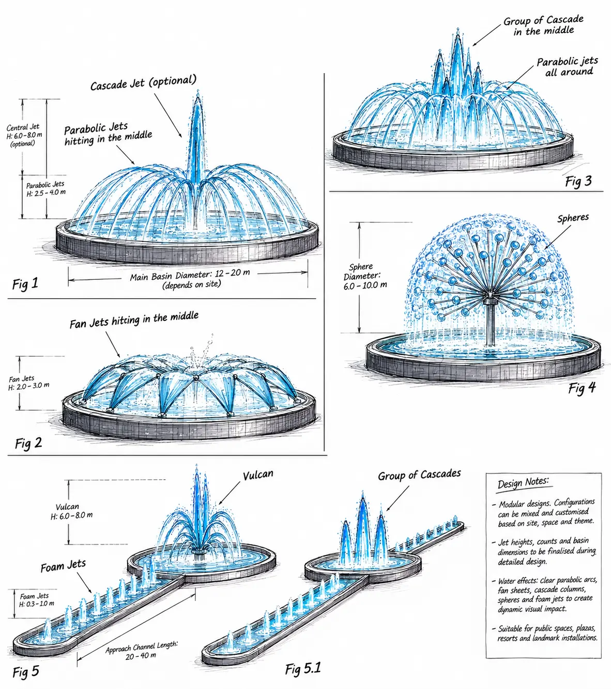
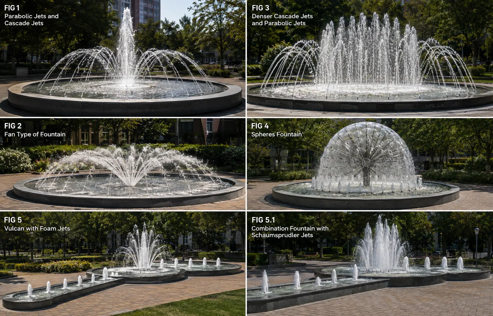
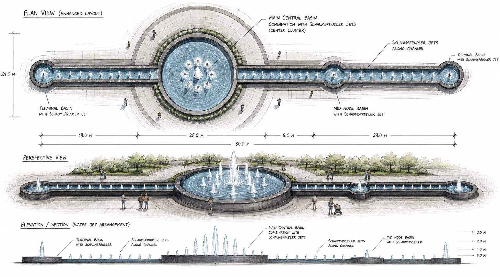
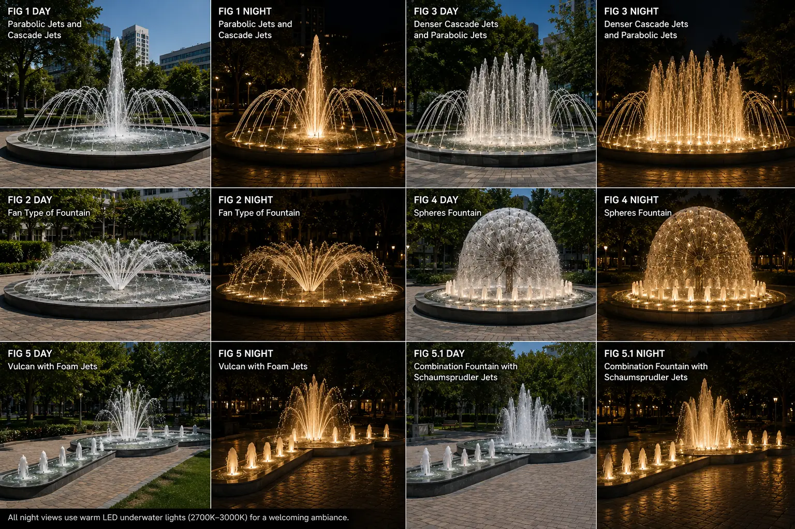

HAEL CITY · MULTIPLE WATER FEATURES
A Family of
Civic Fountains
Distinct compositions for different public spaces, united by a common design language of water, stone and light.

CONCEPT APPROACH
Each location receives a composition suited to its scale, circulation and viewing distance. Circular landmarks, linear channels and changing jet profiles create variety, while shared materials, water quality and lighting establish continuity across Hael City.


EFFECT PALETTE
Studies explored central cascade groups, tall focal jets, parabolic arcs, fan jets, spherical water forms, vulcan effects and low foam jets. Each could be combined into a distinct identity without losing the project's common visual language.
LAYOUT + DAY-TO-NIGHT EXPERIENCE
The long-form civic fountain.

DESIGN ROLE
Water-feature concept design included fountain typologies, jet combinations, basin relationships, visual hierarchy and day-to-night character, supported by clear design direction for later hydraulic and technical engineering coordination.
